Caja · S4·F4 · 49 partidas
The Green Terror75,5% de victorias
🇪🇸 ES · 🇬🇧 EN · 🇫🇷 FR · 🇩🇪 DE · 🇮🇹 IT
📖 Guía de Volk'ar (killer) · Guía de Pesadilla Verde (mapa)
Volk'ar en Pesadilla Verde. Sobre 49 partidas registradas se gana el 75,5% de las veces, 10,2 puntos por encima de la media del juego (65,3%).
Cuidado con la muestra
Solo 49 partidas registradas. Repartidas entre Dark Powers, Finales y hojas de preparación, cada desglose queda en muy pocas: tómalos como indicio, no como hecho.
Qué tiene de particular
Movimiento oculto: Volk'ar no está en el tablero, avanza por un Path de cartas de Movimiento. Con el ojo  la carta va boca arriba (sabes por dónde va); con el ojo tachado
la carta va boca arriba (sabes por dónde va); con el ojo tachado  , boca abajo. Sale de su escondite con el icono Reveal
, boca abajo. Sale de su escondite con el icono Reveal  , con la 6.ª carta del Path o si le haces daño. Si atacas y no estaba en ese espacio, te embosca. El único killer de movimiento oculto del juego, muy tenso. Pero la comunidad avisa: el movimiento oculto se suma a un bucle ya complejo, y el tablero se lee mal. De los más exigentes en reglas.
, con la 6.ª carta del Path o si le haces daño. Si atacas y no estaba en ese espacio, te embosca. El único killer de movimiento oculto del juego, muy tenso. Pero la comunidad avisa: el movimiento oculto se suma a un bucle ya complejo, y el tablero se lee mal. De los más exigentes en reglas.
| Nivel | Experto |
| El mapa | Sistema de río, víctimas soldado entrenables |
Cómo funciona Volk'ar
- Su mecánica principal es el movimiento oculto: no se coloca su meeple, sino marcadores Origin y cartas Movement boca abajo.
- Atacas el Path (movimiento potencial) y solo se revela su ubicación si el ataque hace daño.
- Usa cartas Track Action en el Action Tableau y la carta Attack Resolution.
Resumen de la página de la Final Girl Wiki (CC BY-SA).
El mapa: Pesadilla Verde
18 espacios y 2 salidas (noroeste y sureste, la Cave). Espacios de búsqueda: Ancient Ruins, Rebel Camp y Supply Depot; otros con nombre: Waterfall, Upper River, Central River, Lower River (estos cuatro forman el River), Cursed Temple, Clearing y Cave.
- El espacio con el token Huey es una salida: estando allí puedes salvar cualquier número de Victims y luego se retira el Huey, dejando el Clearing, que no es salida.
- El Huey no puede volver a usarse salvo que un efecto lo devuelva al tablero.
- River: río abajo (Waterfall > Upper > Central > Lower River) puedes avanzar cuanto quieras gastando un solo espacio de movimiento.
- Soldiers: todas las Victims normales son Soldiers; actúan como Victims, pero te siguen al espacio del Killer y pueden recibir órdenes.
Cartas propias: Huey token
Resumen de la página de la Final Girl Wiki (CC BY-SA).
El killer
Volk'ar gana el 74,2% repartido por todos los mapas, sobre 97 partidas. Aquí, en Pesadilla Verde, la cifra es 75,5%.
Hojas de preparación
De la más dura a la más fácil. Mínimo 20 partidas.
| Preparación | Victorias | Partidas |
|---|---|---|
| Jungle Madness | 70,0% | 20 |
| High Ground | 80,0% | 20 |
| Rebel Yell | 81,0% | 21 |
Entre Jungle Madness y Rebel Yell hay 11 puntos de diferencia. El montaje inicial pesa más de lo que parece.
Dark Powers
| Dark Powers | Victorias | Partidas |
|---|---|---|
| Chameleon of Death | 75,0% | 24 |
| Stress of the Unknown | 76,5% | 34 |
| Blades in the Dark | 78,3% | 23 |
Cartas de Finale
| Cartas de Finale | Victorias | Partidas |
|---|---|---|
| Self Destruct | 56,2% | 32 |
| Rampage | 92,0% | 25 |
Dónde conseguirla
Enlaces de afiliado: si compras, a mí me llega una comisión y a ti te cuesta lo mismo. No cambian lo que dicen los datos de arriba.
Cómo empezar la partida
Las cuatro aperturas, con cuál usar según lo que veas en el montaje, están en la estrategias de salida.
📖 Guía de Volk'ar (killer)
Vale con cualquier mapa. ↑ arriba
 = carta boca arriba al Path ·
= carta boca arriba al Path ·  = carta boca abajo ·
= carta boca abajo ·  = Reveal, se revela · ⌛ = Tiempo · ✴ = daño · ❤️ = recuperas vida · 💔 = pierdes vida · 🎭 = sube el Horror · ⊘🎭 = baja el Horror · 🎲 = dado · 🔧 = espacio con el icono naranja de la llave · 🩸 = Bloodlust (sed de sangre del killer)
= Reveal, se revela · ⌛ = Tiempo · ✴ = daño · ❤️ = recuperas vida · 💔 = pierdes vida · 🎭 = sube el Horror · ⊘🎭 = baja el Horror · 🎲 = dado · 🔧 = espacio con el icono naranja de la llave · 🩸 = Bloodlust (sed de sangre del killer)
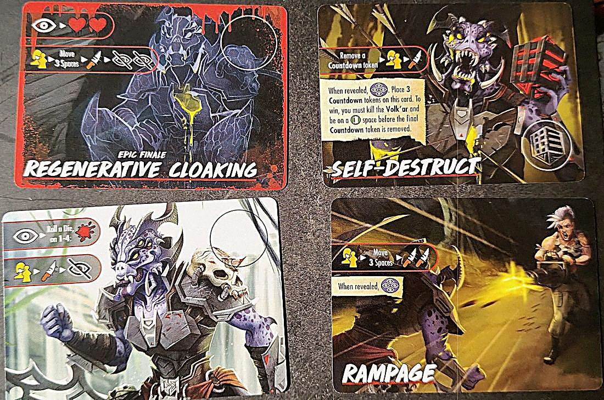
Ojo con esto
- Si la atacas oculta y no está en el espacio que atacaste, te embosca a ti (aunque atacara otro): sufres la Ambush Penalty de la última carta de su Path.
- Nunca puedes mirar los descartes de Movimiento.
Preparación especial
- Pon las cartas de Acción Track en el Action Tableau.
- Deja junto a la zona de juego la carta Attack Resolution, las fichas de Daño y la ficha de Ataque (la diana).
- Baraja las cartas de Movimiento y deja el mazo boca abajo junto al tablero. Reparte 1 carta boca abajo al lado, dejando sitio para 5 más.
- Al revelar la carta de inicio, no pongas a Volk'ar en el tablero: su figura va en el reverso de la carta Finale, en el hueco marcado. Pon un marcador Origin donde empezaría el Killer y el otro encima de esa carta de Movimiento boca abajo.
Oculta o visible
- Volk'ar no tiene valor de Movimiento: se mueve según su Path (camino), la fila de cartas de Movimiento.
- Oculta (Concealed): no se ve, pero siempre está en algún espacio, el que marca su Path. Su figura está en la carta Finale. Si empieza la fase del Killer oculta, resuelve la Killer Action de arriba de la Finale.
- Visible: su figura está en el tablero y se la ve normal. Si empieza la fase del Killer visible, resuelve la Killer Action de abajo.
- La carta Origin es la primera del Path (lleva un marcador Origin encima) y marca dónde empieza a moverse a escondidas.
Cómo se construye el Path
- Con el icono del ojo
 , roba una carta de Movimiento y ponla boca arriba en el siguiente hueco del Path. Con el ojo tachado
, roba una carta de Movimiento y ponla boca arriba en el siguiente hueco del Path. Con el ojo tachado  , ponla boca abajo.
, ponla boca abajo. - Si está visible cuando se resuelve un ojo tachado , se oculta al momento: pon un Origin en la carta nueva y el otro en su espacio actual, y su figura vuelve a la carta Finale.
- Si el mazo se acaba, baraja los descartes y haz uno nuevo.
Cuándo sale de su escondite
- Resuelve su Path y se revela cuando: resuelves el icono Reveal
 de una carta, se añade la 6.ª carta al Path, o le haces daño estando oculta (ver abajo).
de una carta, se añade la 6.ª carta al Path, o le haces daño estando oculta (ver abajo). - Si la 6.ª carta llega en mitad de la Killer Action de la Finale o de una carta de Terror (u otra), acaba primero esa carta. Puede haber más de 6 cartas que resolver.
- Al revelarse: 1) pon su figura en el espacio del marcador Origin (aunque ya no se pueda entrar) y deja los dos Origin junto al mazo. 2) Desde la carta Origin, resuelve una a una las cartas del Path, girándolas si hace falta: se mueve y ataca donde esté si la carta lo pone. Los espacios con restricciones para el Killer le afectan, y a veces no se mueve. 3) Si tú o ella tenéis que revelar la ficha Final Health, espera a acabar todas las cartas. 4) Descarta las cartas del Path.
Atacarla cuando está oculta
- Puedes atacar cualquier espacio a tu alcance como si estuviera ahí. Pon la ficha de Ataque en ese espacio, resuelve el ataque y apunta el daño con fichas de Daño en la carta Attack Resolution.
- Si no haces daño, sigue oculta y no se resuelve el Path. Si haces daño, se resuelve su Path.
- Si acaba en el espacio de tu ficha de Ataque, ¡recibe el daño! Si acaba en otro, el ataque no sirve y te embosca: aplica la Ambush Penalty, la franja roja de abajo de la última carta de su Path.
- Al terminar, quita las fichas de Daño y la de Ataque.
- Si atacaste tu propio espacio, ella acaba ahí y la última carta tiene línea de Killer Attack, los dos ataques pasan a la vez.
Mientras está oculta
- Si algo te pide colocar algo o contar espacios respecto al Killer, usa el espacio del marcador Origin.
- Si algo te pide colocar al Killer, ignóralo.
- Si una carta tiene línea de Killer Action, trátala como un ojo tachado .
- Las víctimas no entran en pánico en la fase de Pánico.
Rastrearla (Track)
- La carta de Acción Track (2 ⌛) destapa cartas del Path: con 3★ revela la carta Origin o 2 cartas más; con 2★, 2 cartas (no la Origin); con 1★, 1 carta (no la Origin). La fila roja: Volk'ar ▸ ojo tachado .
- Si todas las cartas del Path están boca arriba sabes exactamente dónde está. Si queda alguna boca abajo, toca adivinar.
Sus cartas de Movimiento
- El mazo trae 22, con repetidas. Cada una dice cómo se mueve; algunas tienen línea de ataque (🎯 Final Girl o víctima ▸ 🔪) y la franja roja de abajo es la Ambush Penalty. Ninguna cuenta el espacio donde ya está. Las distintas que hemos visto:
- 2 espacios hacia el espacio 🔧 más cercano (empate: orden alfabético) · ataque · emboscada 🎭🎭
- 1 espacio hacia el 🔧 más cercano (empate: alfabético al revés) · emboscada 2 ⌛
- 3 espacios hacia el 🔧 más cercano (empate: alfabético al revés) · ataque · emboscada 2 manchas de sangre
- 2 espacios hacia el espacio con nombre más cercano (empate: alfabético al revés) · emboscada 1 mancha de sangre
- 1 espacio hacia el espacio con nombre más cercano (empate: alfabético) · ataque · emboscada 🎭
- 3 espacios hacia el espacio con icono verde más cercano (empate: menor número de pánico) · emboscada 1 mancha de sangre
- 2 espacios hacia el icono verde más cercano (empate: mayor número de pánico) · ataque 🔪🔪 · emboscada 🎭
- 1 espacio hacia el icono verde más cercano (empate: menor número de pánico) · ataque · emboscada 3 ⌛
- Mueve 1 espacio en un ①, ② o ③ (seis cartas, con o sin ataque) · emboscadas: 🎭, 🎭🎭, 2 ⌛, 3 ⌛ o manchas de sangre
- No se mueve y recupera ❤️ (dos cartas) · emboscada 🎭🎭 o descartar una carta de Acción al azar
Finales
- Arriba la fila de cuando está oculta, abajo la de cuando está visible.
- Finale básico: oculta, (carta boca arriba al Path) y tira un dado: con 1-4, +🩸. Visible, va a por ti o a la víctima más cercana, ataca y se oculta (ojo tachado ).
- Rampage: va a por ti o a una víctima, se mueve 3 y ataca 2 veces. Al revelarla, se revela Volk'ar (icono Reveal ).
- Self-Destruct: quita una ficha de Countdown, va a por ti y ataca. Al revelarla, se revela Volk'ar y pones 3 fichas de Countdown en la carta. Para ganar tienes que matar a Volk'ar y estar en un espacio de salida antes de que se quite la última.
- Regenerative Cloaking (Epic Finale): oculta, y recupera ❤️❤️. Visible, va a por ti o a una víctima, se mueve 3, ataca y añade dos cartas ocultas (dos ojos tachados ).
Poderes oscuros
- Blades in the Dark: al resolver su Path, muere 1 víctima en cada espacio adyacente a donde acaba.
- Chameleon of Death: si la atacas estando oculta y no recibe daño, recibes ✴ igual a su valor de Ataque.
- Stress of the Unknown: la primera vez cada turno que resuelves el ojo tachado , pierdes 2 ⌛.
- Merciless Ambush (Epic Dark Power): al resolver su Path, aplica la Ambush Penalty de cada carta de Movimiento, no solo la última.
Carta Attack Resolution
- Al atacarla, pon la ficha de Ataque en el espacio al que atacas.
- Luego, antes de resolver su Path, resuelve el ataque y pon en esta carta tantas fichas de Daño como daño hayas hecho.
Cartas de Terror (y qué significan sus iconos)
- Recuerda: ojo = carta de Movimiento boca arriba al Path (sabes por dónde va); ojo tachado = carta boca abajo (no lo sabes); los 4 ojos morados = Reveal , sale y resuelve todo su Path.
- Sneak: 🎭 y ojo tachado . Sube el Horror y se esconde un paso más.
- Stealth Blitz: ojo , ojo , ojo tachado . Añade 3 cartas al Path de golpe: si ya tenía bastantes, puede llegar a la 6.ª y salir.
- Out of the Shadows: si ya está visible, descártala y roba otra. Si no, Reveal : sale de su escondite ya.
- Psy Ops: si está visible, descártala y roba otra. Si no, descarta todas las cartas de Acción Track de tu mano, luego 🎭 y ojo . Te deja sin forma de rastrearla.
- Bait 'n Switch: si la carta Origin está boca arriba, gírala boca abajo. Baraja las demás cartas de Movimiento del Path y vuelve a ponerlas boca abajo. Luego 🎭🎭. Todo lo que habías rastreado se pierde.
- Savage Upgrade: revela una a una las cartas de Terror apartadas y pon en juego el primer Minor Dark Power que encuentres. Luego ojo tachado . Si no salió ningún Minor Dark Power, +🩸🩸.
- Energy Shield (Minor): al revelarse, pon un ❤️ en la carta. La primera vez cada turno que se resuelve el ojo tachado , añade otro. No se le pueden añadir ❤️ de otra forma. Se descarta cuando no le quedan ❤️.
- Collector (Minor): cada vez que se resuelve su Path, primero coge el objeto de arriba del espacio 🔧 más cercano y ponlo debajo de esta carta. Al descartarse, todos esos objetos forman un mazo nuevo junto al tablero y la ficha de Collection va al espacio de Volk'ar: ya se puede buscar ahí.
- Evasion (Minor): cada vez que resuelves el ojo tachado , resuélvelo dos veces.
📖 Guía de Pesadilla Verde (mapa)
Vale con cualquier killer. ↑ arriba
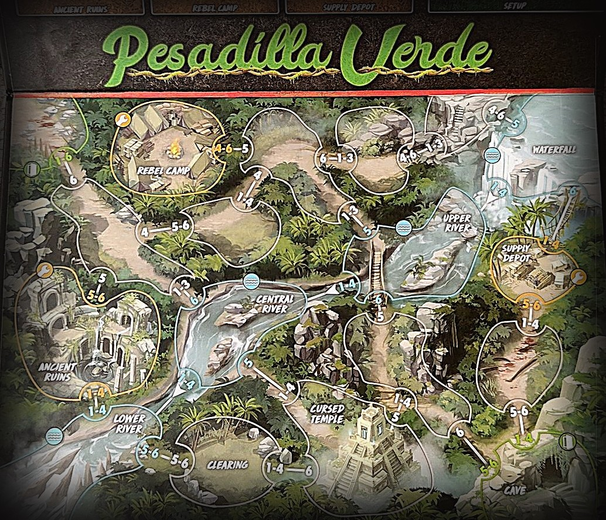
Ojo con esto
- Los Soldiers te siguen al espacio del Killer, al revés que las víctimas normales.
- Al principio, salvar a un Soldier cuesta 2 ⌛ y un Soldier solo no hace daño.
- Nadie puede ir río arriba, contra las flechas.
Preparación especial
- Pon el token del Huey en el Clearing.
- Pon las cartas de Acción Train en el Action Tableau.
- Deja junto a la zona de juego la carta Soldiers y los cubos de Acción. Pon encima las 8 fichas de Mejora: las 2 de inicio (con la estrella verde) por su cara desbloqueada y las otras 6 por su cara bloqueada (el candado).
Los Soldiers
- Toda víctima normal es un Soldier. Funcionan como víctimas normales casi siempre, pero te siguen al espacio del Killer y se les pueden dar órdenes.
- El Archeologist y el Rebel Leader no son Soldiers y no reciben órdenes.
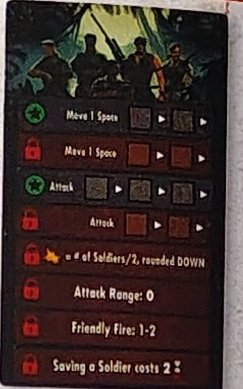
Mejoras (Upgrades)
- Hay mejoras de Acción (fichas con casillas) y de Habilidad (sin casillas). Al empezar solo tienen dos de Acción: moverse y atacar. La carta de Acción Train desbloquea más.
- Desbloquear: elige una ficha y gírala del candado a su cara desbloqueada. Si algo te dice que bloquees una, gírala al revés.
- Atacar (empiezas con una desbloqueada y otra bloqueada): un Soldier o grupo ataca a Enemies dentro de su alcance.
- Moverse (igual, una y una): un grupo de Soldiers se mueve 1 espacio.
- Salvar Soldiers: no quieren que los rescaten, quieren pelear. Salvar uno cuesta 2 ⌛; desbloqueada, no cuesta Tiempo.
- Fuego amigo: cada vez que atacan, tira un dado por cada Soldier del ataque. Con 1-2 muere uno de ellos. Desbloqueada, se acaba el fuego amigo.
- Alcance: al principio solo atacan su espacio. Desbloqueada, también uno adyacente.
- Daño: al principio hacen ✴ igual a Soldiers ÷ 2, redondeando abajo (uno solo no hace nada, tres hacen 1). Desbloqueada, se redondea arriba (uno hace 1, tres hacen 2).
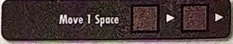
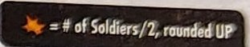
Dar órdenes
- En la fase de Acción: elige el espacio con los Soldiers, elige una ficha de mejora de Acción y pon un cubo en su casilla de la izquierda, y resuelve la Acción con todos los Soldiers de ese espacio.
- No puedes usar una Acción si ya hay un cubo en su fila.
- En el Mantenimiento, mueve todos los cubos una casilla a la derecha. Al salir de la última, el cubo vuelve a estar disponible.
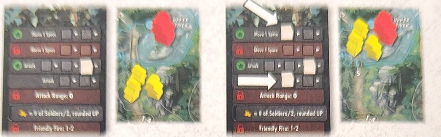
El Huey
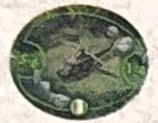
- El espacio del Huey cuenta como espacio de salida (el icono verde). Estando con el Huey, puedes salvar a todas las víctimas que quieras de ese espacio.
- Luego se quita el Huey y el Clearing deja de ser de salida. Solo vuelve si un efecto del juego lo pone otra vez.
El río
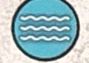
- Hay 4 espacios de río: Waterfall, Upper River, Central River y Lower River.
- Río abajo (siguiendo las flechas) puedes llegar a cualquier espacio de río gastando 1 de movimiento: de la Waterfall al Lower River con un solo éxito de Walk. Pasas por los de en medio y resuelves sus efectos.
- Los Soldiers también se mueven así; los Enemies no: solo bajan a un espacio de río adyacente.
- Nadie (tú, víctimas ni Enemies) puede ir río arriba. Aun así, el espacio de río arriba cuenta como adyacente.
- El Wet Suit te deja ir río arriba, pero las víctimas no te pueden seguir.
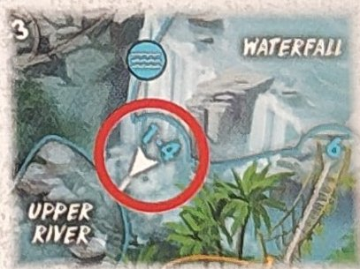
Espacios
- Con nombre: Lower, Central y Upper River, Waterfall, Rebel Camp, Ancient Ruins, Supply Depot, Cursed Temple, Clearing y Cave.
- Los espacios 🔧 son Ancient Ruins, Rebel Camp y Supply Depot, cada uno con su propio mazo de objetos en el lateral del tablero.
Inicios
K = dónde empieza el killer · figura amarilla = la Final Girl · números = víctimas en cada espacio.
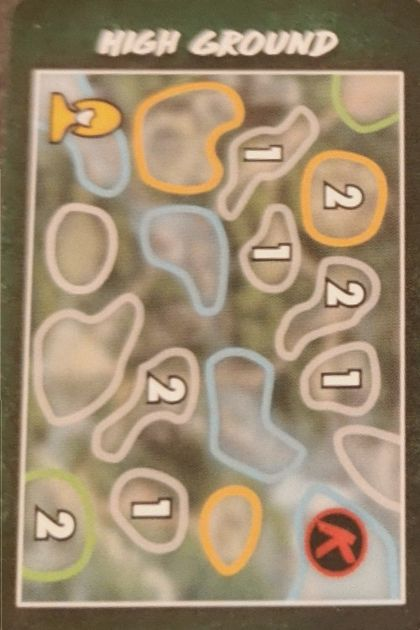
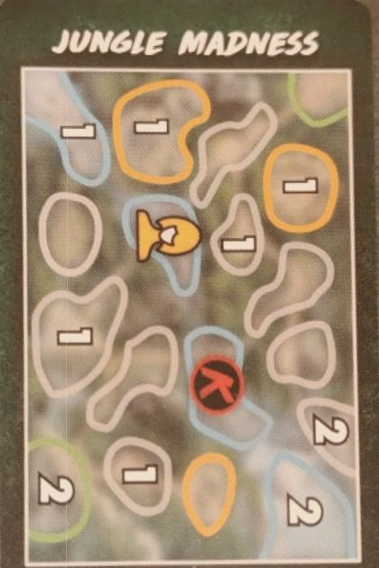
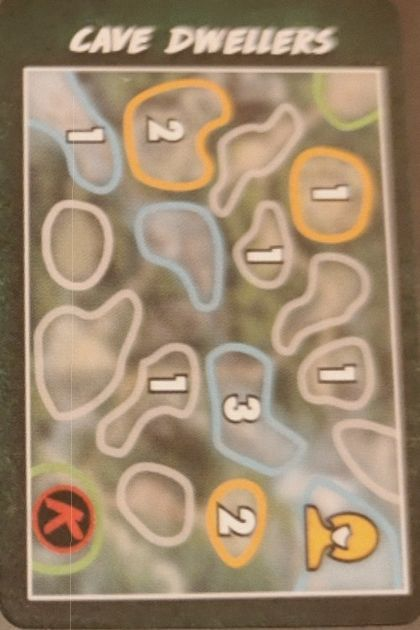
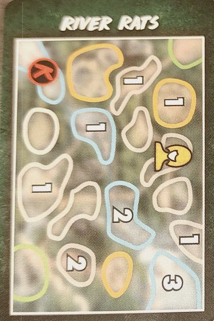
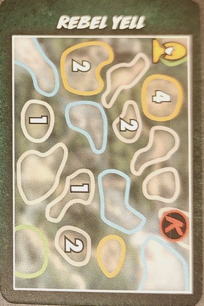
Objetos
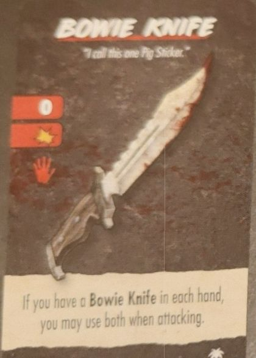
Arma · alcance 0 · 1 ✴ · 1 mano. Si llevas una Bowie Knife en cada mano, puedes usar las dos al atacar.
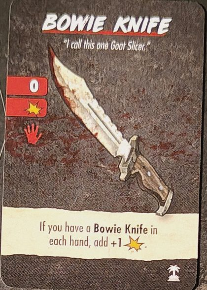
Arma · alcance 0 · 1 ✴ · 1 mano. Si llevas una Bowie Knife en cada mano, +1 ✴.
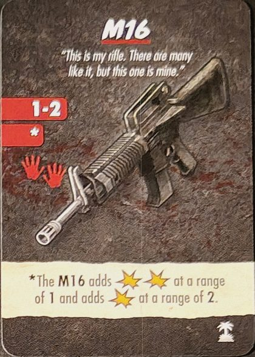
Arma · alcance 1-2 · 2 manos. A alcance 1 hace 2 ✴; a alcance 2, 1 ✴.
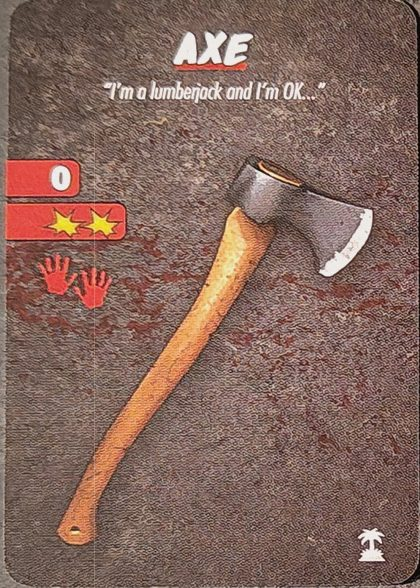
Arma · alcance 0 · 2 ✴ · 2 manos.
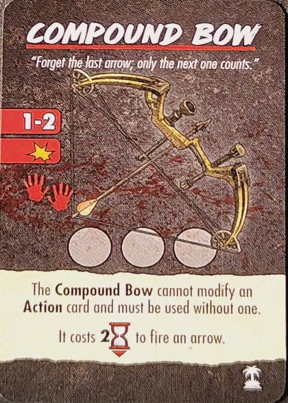
Arma · alcance 1-2 · 1 ✴ · 2 manos · 3 flechas. No puede modificar una carta de Acción: se usa sin ella. Disparar una flecha cuesta 2 ⌛.
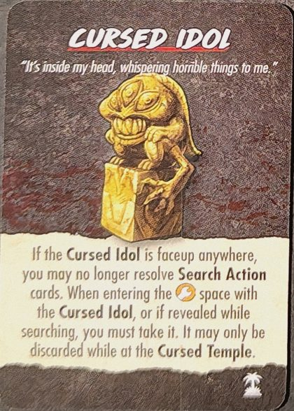
Si está boca arriba en cualquier sitio, ya no puedes resolver cartas de Acción Search. Al entrar en el espacio 🔧 con el Idol, o si sale al buscar, tienes que cogerlo. Solo se puede descartar en el Cursed Temple.
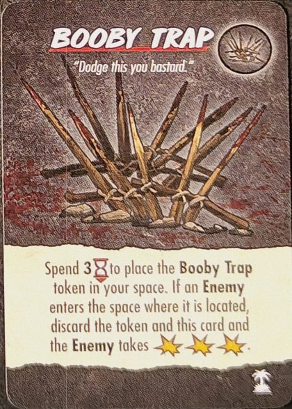
Gasta 3 ⌛ para poner la ficha de Booby Trap en tu espacio. Si un Enemy entra en ese espacio, descarta la ficha y la carta, y el Enemy recibe 3 ✴.
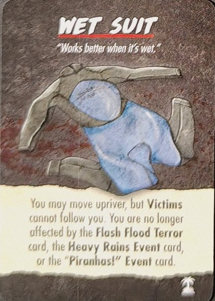
Puedes moverte río arriba, pero las víctimas no te pueden seguir. Ya no te afectan la carta de Terror Flash Flood ni los eventos Heavy Rains y "Piranhas!".
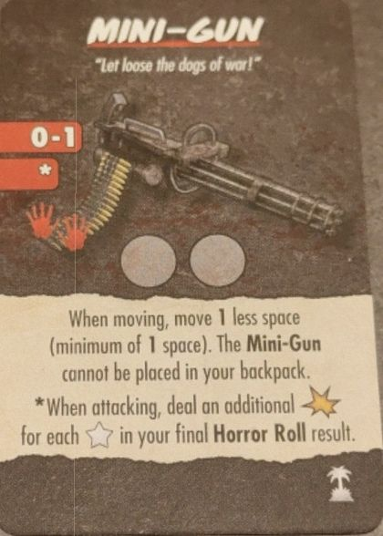
Arma · alcance 0-1 · 2 manos · 2 usos. Al moverte, mueves 1 espacio menos (mínimo 1). No se puede llevar en la mochila. Al atacar, haces 1 ✴ más por cada ★ de tu Horror Roll final.
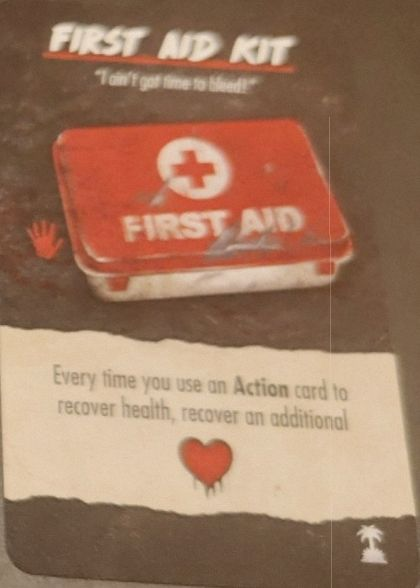
1 mano. Cada vez que usas una carta de Acción para recuperar vida, recuperas ❤️ una más.
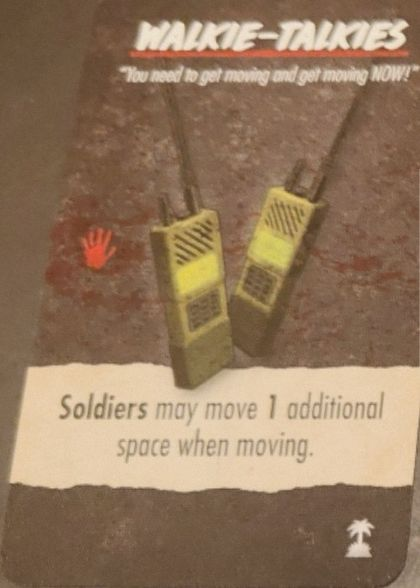
1 mano. Los Soldiers pueden moverse 1 espacio más cuando se mueven.
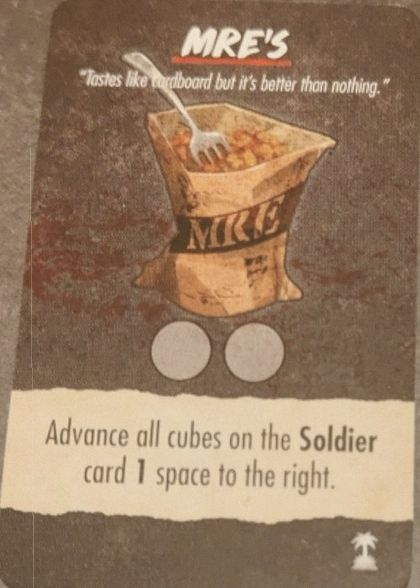
2 usos. Avanza todos los cubos de la carta Soldier 1 casilla a la derecha.
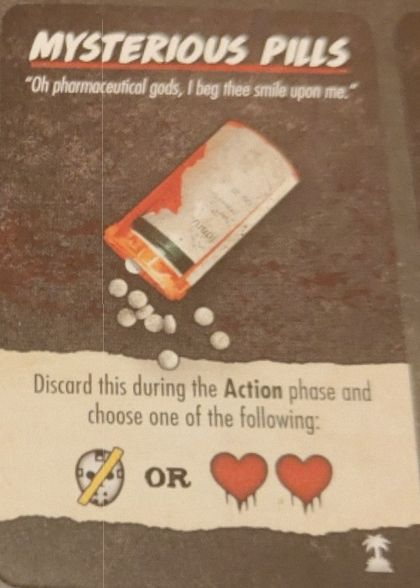
Descártala en la fase de Acción y elige: ⊘🎭 o ❤️❤️.
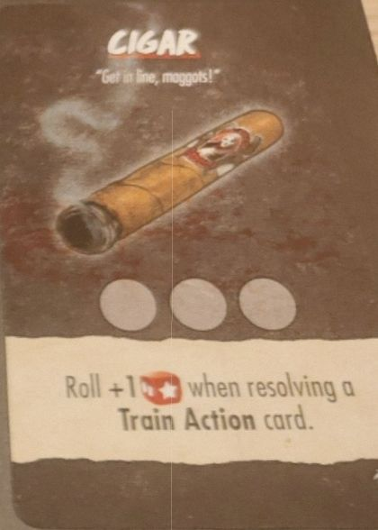
3 usos. Tira 1 🎲 más al resolver una carta de Acción Train.
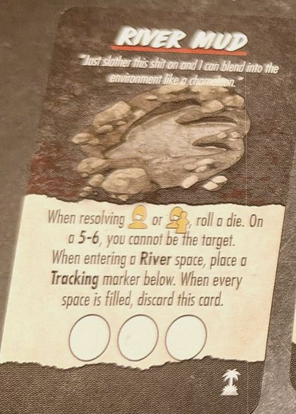
Al resolver el icono de objetivo Final Girl o Víctima/Final Girl, tira un dado: con 5-6 no puedes ser el objetivo. Al entrar en un espacio River, pon un marcador de Tracking en la carta. Cuando llenes las 3 casillas, descártala.
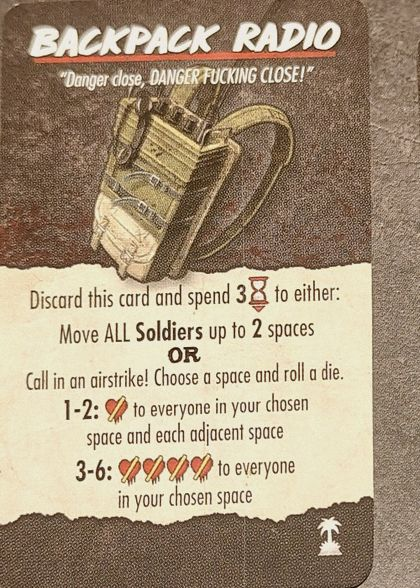
Descártala y gasta 3 ⌛ para: mover a todos los Soldiers hasta 2 espacios, o pedir un ataque aéreo: elige un espacio y tira un dado. 1-2: 💔 a todos en ese espacio y en cada adyacente. 3-6: 💔💔💔💔 a todos en ese espacio.
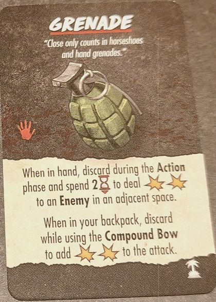
1 mano. En la mano: descártala en la fase de Acción y gasta 2 ⌛ para hacer 2 ✴ a un Enemy de un espacio adyacente. En la mochila: descártala mientras usas el Compound Bow para sumar 2 ✴ al ataque.
Hay 2 Grenade y 2 Bowie Knife distintas.
Eventos de Pesadilla Verde
- Supply Drop
- Coge 3 objetos al azar que no se usaron y ponlos boca arriba junto al mazo de objetos del Supply Depot. Al buscar ahí con éxito, puedes elegir uno de ellos en vez de robar. Se descarta cuando ya no quede ninguno de los 3.
- "Piranhas!"
- Tira un dado y pon el token de Piranhas: 1-2 Lower River, 3-4 Central River, 5-6 Upper River. Todos los de ese espacio: 💔. Quien entre después en ese espacio: 💔.
- "Get to the Choppa!"
- Si el token del Huey no está en el tablero, ponlo en el Clearing. Por cada víctima que salves con el Huey, elige: ❤️❤️, 3 ⌛, ⊘🎭 o coger una carta de Acción (máx. 2 ⌛). Se descarta cuando se retira el token del Huey.
- Heavy Rains
- Salvo que vengas de otro espacio River, entrar en un espacio River cuesta 2 ⌛.
- Twitchy Soldiers
- Si tienes desbloqueada la mejora "No Friendly Fire", bloquéala ya. Al tirar por fuego amigo, los Soldiers mueren con 1-3. Se descarta si se desbloquea "No Friendly Fire".
- Rebel Raiding Party
- Tira un dado: 1-3 Ancient Ruins, 4-6 Supply Depot. Coge todos los objetos de ese espacio, barájalos boca abajo y ponlos debajo del mazo de objetos del Rebel Camp. Descarta.
- Cursed Temple
- Pon el token Cursed en el Cursed Temple. Cuando entres en el Cursed Temple: 💔💔💔 y descarta el token (y la carta).
- Sgt. Weathers
- Ponlo en el espacio con más víctimas. Cuenta como Soldier. Cuando le das una orden, él y las víctimas que estén con él pueden moverse 1 espacio más y suman +1 al alcance de ataque. Si muere: 🎭🎭.
- Rebel Leader
- Ponlo en el Rebel Camp. En el Upkeep se mueve 1 espacio hacia la víctima más cercana que no esté en el Rebel Camp, y luego lleva 1 víctima de su espacio al Rebel Camp. Los Soldiers del Rebel Camp no pueden recibir órdenes de hacer Acciones. No te sigue.
- Archeologist
- Tira un dado y ponlo: 1-2 Ancient Ruins, 3-4 Rebel Camp, 5-6 Supply Depot. Al buscar en su espacio tiras 1 🎲 menos, salvo que pagues 3 ⌛. Se vuelve a resolver en cada Upkeep.
Texto nuestro a partir del reglamento, las cartas y la wiki. Si ves un error, dínoslo.